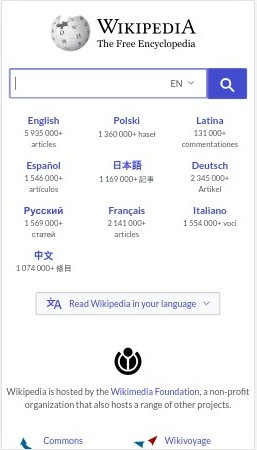
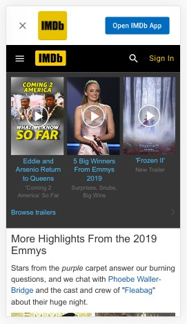

Sumilang R. Plucena
CIT 230: Principles of Design

PARC: Proximity
The organization and grouping of the information on the page were on point. The page presented the information in a logical progression visitors will know where to start and end.
Wikipedia Foundation
Wikipedia: The Free Encyclopedia White Space and Clean Design
There is a lot of white space available on this page, but the page doesn't look empty or boring. The presentation of information on this page was fluid and clear. Navigating and finding information was a breeze and effortless.
Amazon
IMDb: Ratings and Reviews for New Movies and Shows PARC: Contrast
The design principle of contrast was exemplified on this page. The color scheme on the page was on point. Important details on this web page stood out. The image snapshots blended perfectly on the dark background. They even included a link to their mobile app.